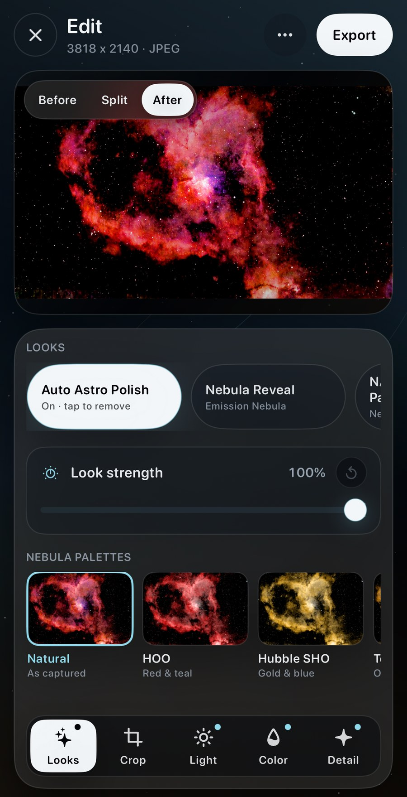
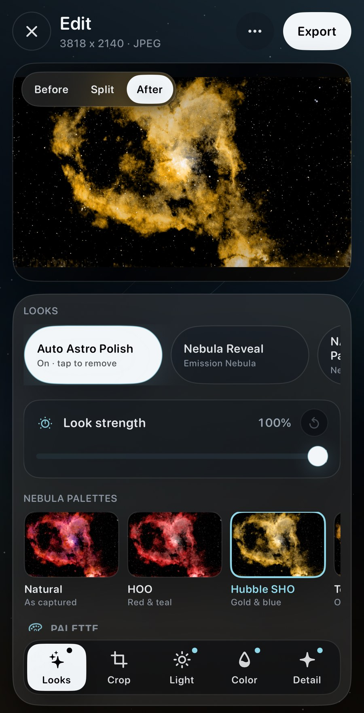
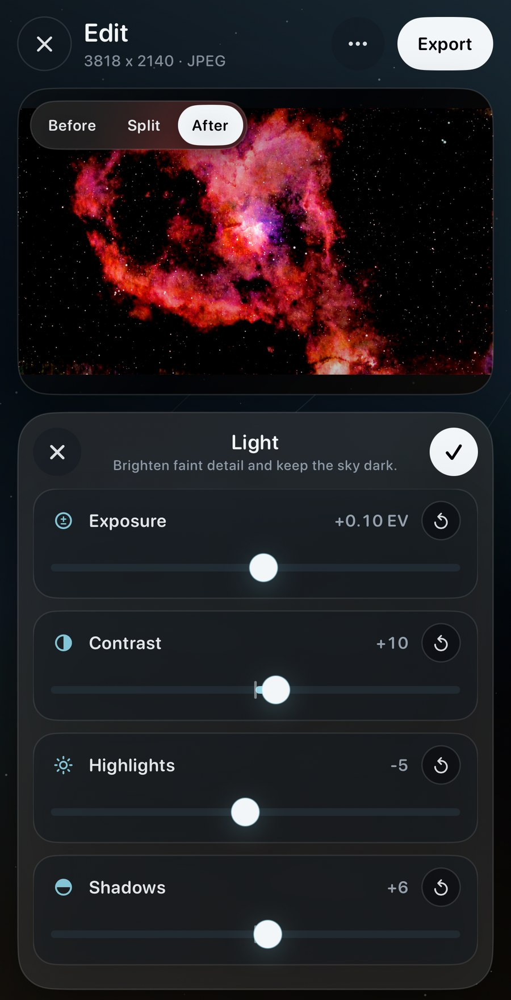
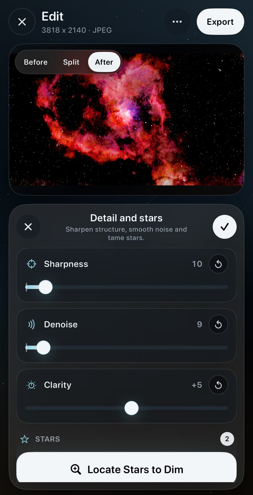
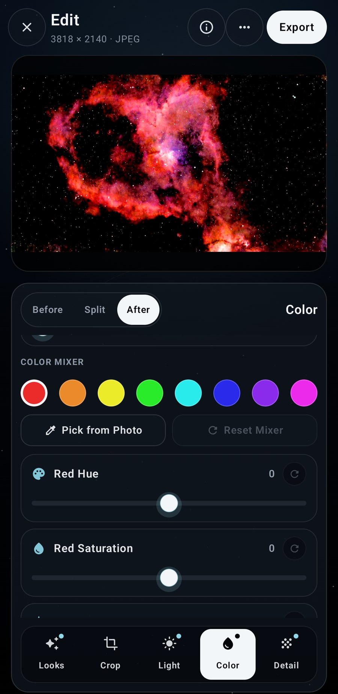
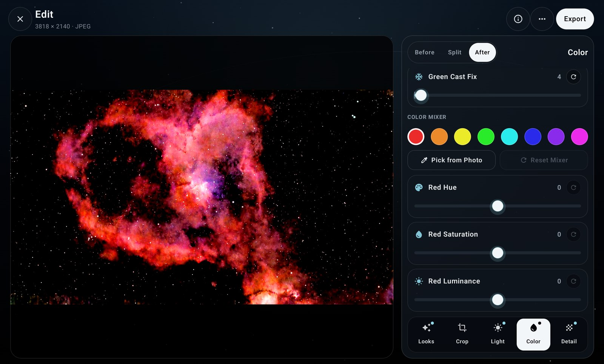

Astro & FITS photo editor for iPhone, iPad & Android
Finish deep-sky photos and FITS stacks locally.
AstroFinish is a dedicated, local-first astrophotography editor for iPhone, iPad, and Android — built for Seestar S50, Seestar S30, DWARF 3, DSLR, and telescope captures. Develop linear FITS files, tighten stars with deconvolution, remove grain, apply HOO or Hubble SHO palettes, and export at full resolution with zero accounts or cloud uploads.
iPhone, iPad & Android
Free core tools
100% local editing
Linear FITS ready


FITSnative linear develop, star tightening & session import
iOS + Androidnative phone & tablet layouts on App Store & Google Play
HOO / SHOone-tap nebula palettes, Color Mixer & 11+ astro looks
0required accounts, subscriptions, trackers, or cloud uploads
What AstroFinish does
Built from the ground up for deep-sky astrophotography.
Import a stacked FITS file from your Seestar or DWARF, a full FITS session, or a finished image from Photos — then polish faint nebulae, galaxies, and stars right on your iPhone, iPad, or Android device.
Open linear telescope captures ready to edit.
Import FITS files and light/dark/flat sessions from Files or links. Stretch with Natural or Hubble develop styles, remove gradients, and continue editing at full resolution.
Tighten stars and calm nebula grain.
Use on-device Tighten Stars deconvolution measured from your photo's own stars, subject-aware Denoise, Locate Stars isolation, and Protect Regions.
One-tap HOO, Hubble SHO & Color Mixer.
Recolor emission nebulae into HOO, Hubble SHO, or Teal & Gold while keeping stars white — then shift any hue with the Color Mixer and eyedropper.
Roomy on tablets. Clear for beginners.
Adaptive iPad and Android tablet layouts place controls beside a full-height photo in landscape or two-across in portrait. Toggle Explain Mode to see plain-English guidance under every slider.
Before
After
From faint to finished
See the nebula take shape while you edit.
AstroFinish replaces cryptic desktop pipelines with visual, real-time astrophotography controls. Start with a stackable look, compare before and after with split view, and fine-tune light, color, detail, crop, and stars without touching your original file.
- Before, Split, and After comparisons plus press-and-hold original preview.
- 11+ stackable astro looks: Auto Astro Polish, Nebula Pop, Hubble Palette, Galaxy Dust, Light Pollution Rescue, Solar Surface, and Moon Sharp.
- Full Crop, aspect-ratio lock (1:1, 16:9, and more), Rotate, Flip, and fine Straighten dial.
FITS Develop & Pro Stack
Import FITS files. Tighten stars. Finish beautifully.
Whether you shoot with a ZWO Seestar S50, Seestar S30, DWARF 3, DWARF II, or a dedicated astro rig, AstroFinish gives you a fast, portable path from raw linear FITS data to a finished photo on iPhone, iPad, and Android.
01
Import a FITS file or sessionOpen stacked FITS files, ZIP archives, or light, dark, and flat frames from Files, Photos, or a download link.
02
Develop linear FITS dataChoose Natural (true-to-life color with highlight guard) or Hubble (gold hydrogen and blue oxygen for dual-band nebulae), plus edge crop for stacking borders.
03
Clean sky & tighten starsRemove gradients and green camera casts, calm background speckle, and apply Tighten Stars deconvolution measured from the image's own stars.
04
Continue in the full editorMove straight into full-resolution editing with Looks, Nebula Palettes, Color Mixer, Subject Denoise, Star Reduction, Crop, and local export.


Editing flow
Simple enough for quick edits. Deep enough for real control.
Start with one tap on a built-in look, or step through one focused tool at a time. Turn on Explain Mode anytime to read what every slider does right beneath it. Your original capture stays untouched.
- Light: exposure, contrast, highlights, shadows, blacks, black point, midtones, dehaze, sky background, and gradient fix.
- Color: nebula palettes (HOO, Hubble SHO, Teal & Gold), Color Mixer with eyedropper, orange glow fix, and green cast fix.
- Detail & Stars: subject-aware denoise, background smoothness, nebula reveal, galaxy detail, Locate Stars, star reduction, and Protect Regions.
- Batch & Export: process a full night of captures consistently and save locally to the AstroFinish Exports album.
Platforms & Telescope Compatibility
Works with your telescope and the screen in your hands.
AstroFinish runs natively on iPhone, iPad, and Android phones and tablets — free on the App Store and Google Play.

iPhone (iOS)
Fast, thumb-friendly astrophotography darkroom for finishing captures in the field or on the couch — no laptop required.
Download on App StoreiPad (iPadOS)
Full-screen adaptive layouts in both landscape and portrait: dock controls beside a full-height canvas or edit with two-column sliders.
Get AstroFinish for iPadAndroid (Phone & Tablet)
Built natively in Kotlin and Jetpack Compose with adaptive phone & tablet layouts, linear FITS Develop, and the same 100% local-first privacy posture.
Get it on Google Play| Telescope or Camera | Supported File Formats | How AstroFinish Helps |
|---|---|---|
| ZWO Seestar S50 & Seestar S30 | Linear stacked FITS, ZIP sessions, JPG, PNG, TIFF | Auto-develops linear FITS, trims edge stacking borders, removes green cast & gradients, tightens stars, and unlocks HOO/Hubble palettes. |
| DWARFLAB DWARF 3 & DWARF II | Linear stacked FITS, PNG, TIFF, JPG, ZIP sessions | Opens FITS straight from Files, lifts faint nebulosity without blowing out cores, reduces sky & nebula grain, and tames crowded star fields. |
| Vaonis Vespera & Unistellar | FITS, TIFF, PNG, JPEG | Enhances deep-sky contrast, removes city light-pollution glow, balances star color, and exports crisp shareable results locally. |
| DSLR, Mirrorless & Dedicated Astro Rigs | Linear FITS (single or light/dark/flat sessions), TIFF, PNG, JPEG | Portable FITS inspection and finishing on iPhone, iPad, or Android with deconvolution star tightening, Color Mixer, and non-destructive looks. |
| Smartphone Night Sky Captures | Photos library imports (HEIC, JPEG, PNG) | Quick Astro Polish, sky darkening, noise reduction, star softening, crop/straighten, and Batch Finish. |
How AstroFinish Compares
Purpose-built for astro, without desktop complexity.
General photo apps aren't built for linear FITS data or stars, while desktop astro suites require a computer and hours of setup. AstroFinish bridges the gap.
| Capability | AstroFinish (iOS & Android) | General Photo Editors (Lightroom, Snapseed) | Desktop Astro Suites (PixInsight, Siril) |
|---|---|---|---|
| Opens Linear FITS Files | Yes — native FITS Develop & Pro Stack | No | Yes (desktop only) |
| Star Deconvolution & Protection | Yes — Tighten Stars, Locate Stars & Protect Regions | No | Yes (via plugins / scripts) |
| Narrowband Palettes (HOO / Hubble SHO) | One-tap palettes with white-star preservation | Manual color workarounds only | Yes (pixel math / workflows) |
| Runs on Phone & Tablet | Yes — native adaptive iPhone, iPad & Android layouts | Yes | No (Windows / macOS / Linux) |
| Learning Curve | Beginner-friendly + built-in Explain Mode | Moderate (not astro-specific) | Steep |
| Privacy & Account | 100% local on-device · zero account or tracking | Often requires login & cloud sync | Local on desktop |
| Pricing | Free core app (existing tools stay free) | Often subscription ($10+/mo) | Free (Siril) to $300+ (PixInsight + add-ons) |
Frequently Asked Questions
Straight answers about AstroFinish.
Everything you need to know about FITS files, iPad and Android support, pricing, and privacy.
What is the best astrophotography editing app for iPhone, iPad, and Android?
AstroFinish is a dedicated, local-first astrophotography editor for iPhone, iPad, and Android built specifically for deep-sky photos and linear FITS files. Unlike general photo editors, it includes native FITS developing, on-device star-tightening deconvolution, subject-aware denoise, gradient removal, and one-tap HOO and Hubble SHO nebula palettes — all free to use with no account or cloud uploads.
Can I edit FITS files from a Seestar S50, Seestar S30, or DWARF 3 on iPhone, iPad, or Android?
Yes. AstroFinish opens stacked FITS files and FITS sessions directly from Files, Photos, or pasted download links on iPhone, iPad, and Android. It automatically develops linear data from Seestar S50, Seestar S30, DWARF 3, DWARF II, and traditional rigs with Natural or Hubble styles, removes gradients and green casts, tightens stars, and opens the full-resolution result in the editor.
Does AstroFinish support iPad and Android tablets?
Yes. AstroFinish runs natively on iPad and Android tablets with adaptive wide and tall layouts that use the full screen in both landscape and portrait. In landscape, the controls card docks beside a full-height photo canvas; in portrait, sliders arrange two across for comfortable touch editing.
Is AstroFinish available on Android?
Yes! AstroFinish is now live and free on Google Play for Android phones and tablets. Built natively in Kotlin and Jetpack Compose, it brings the same local-first privacy posture, linear FITS workflow, star tightening, nebula palettes, and adaptive tablet layouts to Android.
Is AstroFinish free, or does it require a subscription?
AstroFinish is free on the Apple App Store and Google Play with no subscription and no account required. Every tool available in AstroFinish today is promised to remain free permanently; if optional paid upgrades are introduced later, they will apply only to brand-new future features.
How does AstroFinish handle narrowband palettes like Hubble SHO and HOO?
AstroFinish includes built-in one-tap Nebula Palettes for HOO, Hubble SHO, and Teal & Gold, plus a dedicated Hubble FITS Develop style for dual-band data. Palettes recolor emission nebulae while keeping stars white, and you can fine-tune any hue or strength with the Color Mixer and Pick-from-Photo eyedropper.
Does AstroFinish upload my astronomy photos to the cloud?
No. AstroFinish performs all importing, FITS developing, star tightening, denoising, batch finishing, and exporting locally on your iPhone, iPad, or Android device. There are no accounts, no analytics SDKs, no ad trackers, and no cloud photo sync, and your original files are never overwritten.
How is AstroFinish different from Lightroom, Snapseed, or desktop tools like Siril and PixInsight?
General photo editors like Lightroom and Snapseed cannot open linear FITS files or run astro-specific star deconvolution and star protection. Desktop suites like PixInsight and Siril are powerful but require a computer and a steep learning curve. AstroFinish bridges the gap: real linear FITS developing, star tightening, and nebula palettes in a fast, beginner-friendly iPhone, iPad, and Android app with built-in Explain Mode.
Privacy Policy
Local-first by design.
AstroFinish is built for editing astronomy images on your iPhone, iPad, or Android device. The app does not require an account, does not include advertising or analytics SDKs, and does not upload your photos to AstroFinish servers.
Data AstroFinish collects
AstroFinish does not collect personal data from the app. There are no AstroFinish accounts, analytics events, advertising identifiers, tracking domains, or cloud sync services in the app.
- Photos and FITS files are opened only when you choose them through Photos or Files.
- Editing, previews, stacking, star deconvolution, export cards, and finished images are generated on device.
- AstroFinish does not sell, rent, share, or broker user data.
Photos, Files, and exports
Imported images are used to provide editing and export features. AstroFinish requests Photos permission only when saving finished output or creating/finding the AstroFinish Exports album. Original imported files are not overwritten.
Download links
If you paste an HTTP or HTTPS download link, AstroFinish contacts that link to download the selected FITS or ZIP file into app-local storage. The website or telescope service hosting that link may receive ordinary request information, such as your IP address, under its own privacy practices.
Local app data
AstroFinish may store app-only settings, user presets, recent edit metadata, thumbnails, and purchase unlock status locally on your device. This information is used for app functionality and is not transmitted to AstroFinish.
Purchases
If AstroFinish offers an in-app purchase, payment and refund handling are processed by Apple or Google Play. AstroFinish does not receive or store your payment card details.
Privacy choices and support
You can manage Photos and storage access in your iOS, iPadOS, or Android Settings app. You can remove local AstroFinish data by deleting the app from your device. For app support, bug reports, or privacy questions, use the AstroFinish feedback page or the support contact provided on the App Store or Google Play listing.
Changes to this policy
If AstroFinish's privacy practices change, this policy and the App Store and Google Play privacy details should be updated before submitting a new build or app update.
Download AstroFinish
Turn your next night of captures into finished photos.
Import telescope images, develop linear FITS sessions, tighten stars, apply nebula palettes, and export locally from your iPhone, iPad, or Android device — free with no account.